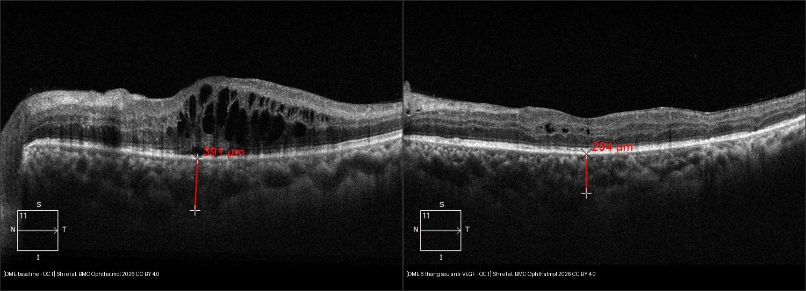
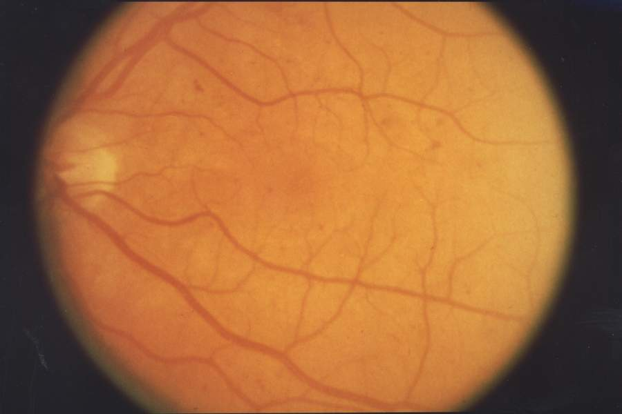
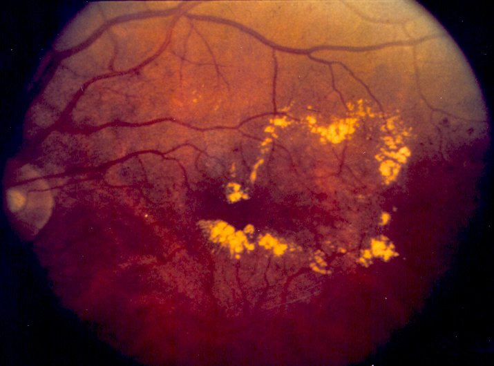
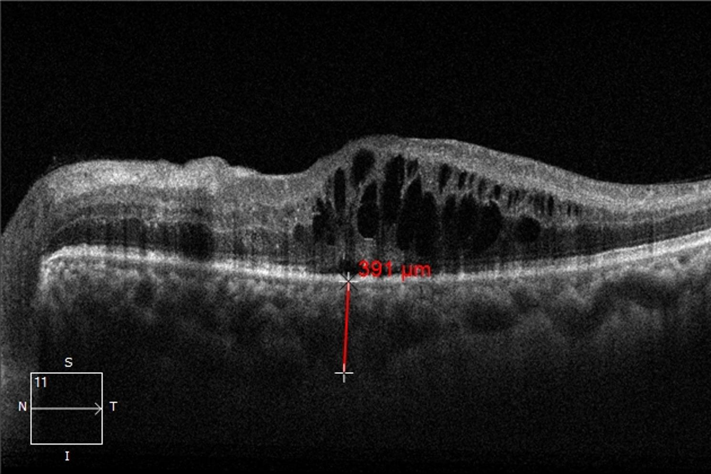

443 — Võng mạc đái tháo đường: phân độ ETDRS, phù hoàng điểm DME & OCTA / Diabetic retinopathy
Tags: pattern:vong-mac-dai-thao-duong vung:vong-mac score:ETDRS protocol:OCT-OCTA
Mức chắc chắn (certainty): tổng hợp y văn (literature synthesis) — nhóm tự biên từ 3 nguồn mở (BMC Ophthalmology 2026 CC BY 4.0 + NEI/NIH public domain + y văn ETDRS/DRCR), chưa gắn ca nguyên văn đơn lẻ.
1. Tổng quan — pericyte rụng trước, VEGF lên sau + số CMT nằm lòng
- Tăng đường huyết mạn làm mất pericyte (pericyte loss) + dày màng đáy mao mạch → vi phình mạch (microaneurysm) → vỡ hàng rào máu–võng mạc (blood-retinal barrier) → rò rỉ + thiếu máu → VEGF tăng sinh mạch (neovascularization). DME (phù hoàng điểm đái tháo đường — diabetic macular edema) là nguyên nhân mờ mắt hàng đầu tuổi lao động và có thể gặp ở mọi mức võng mạc đái tháo đường (kể cả NPDR nhẹ).
- TẠI SAO OCT đọc được DME: dịch trong/ngoài võng mạc tối (hyporeflective) vì nước hấp thu tán xạ ít hơn mô; xuất tiết cứng (hard exudate, lipid) thì sáng chói + bóng lưng vì lipid tán xạ mạnh. Nang trong (intraretinal cysts) = rò rỉ mao mạch; dịch dưới võng mạc = RPE quá tải không bơm kịp.
- Số nằm lòng (Shi 2026, BMC Ophthalmology, 51 mắt DME trung tâm, Conbercept 0,5 mg phác đồ 3 mũi tải + PRN): CMT 466 ± 130 µm → 279 ± 72 µm sau 6 tháng, thị lực logMAR 0,61 → 0,33 (p < 0,001). Ngưỡng nhớ: CST ≥ 300 µm (máy spectral-domain) ≈ phù trung tâm có ý nghĩa — khớp quy tắc bài 441.
- Số toàn thân quyết định mắt: mỗi giảm 1% HbA1c → giảm ~37% nguy cơ biến chứng vi mạch (UKPDS); mục tiêu HbA1c < 7% + HA < 130/80 mmHg — không kiểm soát 2 số này thì tiêm mắt mãi vẫn tái phù.
2. Gamut theo mức ETDRS — đọc đáy mắt 30 giây xếp đúng mức
- Chưa có (no apparent): đáy mắt sạch — khám giãn định kỳ (ĐTĐ type 2 từ lúc chẩn đoán, type 1 sau 5 năm, mỗi 1–2 năm/lần).
- NPDR nhẹ (mild): chỉ vi phình mạch (microaneurysm) — theo dõi + siết đường/HbA1c.
- NPDR trung bình (moderate): vi phình + xuất huyết đốm (dot-blot) + xuất tiết cứng/bông (hard exudate/cotton-wool) — rút ngắn tái khám 6–9 tháng, OCT tìm DME.
- NPDR nặng (severe): luật 4-2-1 — xuất huyết/vi phình ≥ 20 ở cả 4 góc phần tư + chuỗi hạt tĩnh mạch (venous beading) ≥ 2 góc + bất thường vi mạch trong võng mạc IRMA (intraretinal microvascular abnormality) ≥ 1 góc, mà chưa có tân mạch — soi sát mỗi 2–4 tháng, cân nhắc quang đông rải rác (PRP) sớm nếu theo dõi kém.
- PDR (tăng sinh): tân mạch đĩa (NVD) hoặc nơi khác (NVE) ± xuất huyết dịch kính/trước võng mạc — PRP trong ngày–tuần, không chờ.
- DME: dày hoàng điểm + vòng xuất tiết (circinate) — OCT đo CST, có thể kèm mọi mức trên.
3. Bảng so sánh phân biệt (ma trận đối chiếu)
| Thực thể (entity) | Hình ảnh điển hình | Chốt vào (rule-in) | Chốt loại (rule-out) | Gợi ý xác nhận |
|---|---|---|---|---|
| NPDR nhẹ–trung bình | Vi phình + xuất huyết đốm + xuất tiết cứng, chưa tân mạch | ĐTĐ + tổn thương trong võng mạc thuần túy | Tân mạch/XH dịch kính → PDR | Đáy mắt giãn + OCT (loại DME kèm) |
| NPDR nặng (4-2-1) | XH ≥ 20/4 góc + beading ≥ 2 góc + IRMA, chưa tân mạch | Đủ luật 4-2-1 + chưa tân mạch | Có NVD/NVE → đã là PDR | Tái khám 2–4 tháng / PRP sớm |
| PDR | NVD/NVE + XH dịch kính/trước võng mạc hình thuyền | Tân mạch (rò FFA) hoặc XH dịch kính ở BN ĐTĐ | Tổn thương chỉ trong võng mạc → NPDR | PRP 1200–1600 spots, mổ khi co kéo |
| DME trung tâm | Nang trong + CST ≥ 300 µm ± dịch dưới võng mạc (OCT) | Dày trung tâm + ĐTĐ + OCT nang trong | Dày ngoài trung tâm + thị lực còn tốt → laser khu trú | Anti-VEGF 3 tải + PRN (CMT 466→279 µm/6 tháng) |
| Thiếu máu hoàng điểm | FAZ giãn + mao mạch rụng > 1 diện đĩa thị trên OCTA/FFA | Thị lực kém dù CST đã mỏng + FAZ giãn | CST còn dày → phù chưa hết, chưa kết luận thiếu máu | Đừng tiêm mãi vô ích — tiên lượng + hỗ trợ thị lực kém |

Trái: nang trong + dịch dưới võng mạc (baseline). Phải: 6 tháng sau Conbercept — nang xẹp gần hết, dịch hấp thu. Nguồn: Shi et al., BMC Ophthalmology 2026 Fig. 3–4, CC BY 4.0. Ảnh ghép letterbox. Lưu ý trung thực nguồn: vạch đỏ 391 µm → 294 µm là SFCT (dày hắc mạc dưới hõm), không phải CMT; CMT trung bình cả nhóm 466 → 279 µm.Quiz composite: che 2 nhãn, hỏi bên nào cần tiêm tiếp?
Bấm để hiện đáp án
- Trái = DME đang hoạt động (nang trong + dịch dưới võng mạc) → anti-VEGF tải liều + theo dõi CST.
- Phải = đáp ứng tốt sau 6 tháng (nang xẹp, dịch hết) → chuyển PRN theo OCT, đừng tiêm cố định mãi.
- Bẫy số: vạch đỏ là SFCT (hắc mạc), không phải CMT — đọc nhầm là overcall/undercall phù.
IRMA vs tân mạch NVE — ranh giới NPDR nặng/PDR hay sai nhất
- IRMA: vòng nối trong võng mạc, không vượt màng giới hạn trong, không rò mạnh trên FFA — vẫn là NPDR nặng.
- NVE/NVD: mạch bò lên trên/vào dịch kính, rò mạnh thì muộn FFA — đã là PDR, chỉ định PRP đổi hẳn.
- Cạm bẫy: IRMA cạnh NVE trên cùng một mắt ĐTĐ lâu năm — thấy 1 ổ tân mạch là cả mắt đã PDR, đừng ghi "NPDR nặng" rồi hẹn 3 tháng.
4. Protocol chụp + điều trị chuẩn
- Sàng lọc: đáy mắt giãn đồng tử (7 trường ETDRS hoặc widefield) — type 2 từ lúc chẩn đoán, type 1 sau 5 năm; OCT hoàng điểm mỗi lần nghi DME (macular cube + CST + DRIL/EZ); OCTA/FFA khi nghi tân mạch hoặc thiếu máu (FAZ giãn, rụng mao mạch).
- DME trung tâm (CST ≥ 300 µm + mờ): anti-VEGF nội nhãn first-line — 3 mũi tải hàng tháng + PRN theo OCT (aflibercept/ranibizumab/conbercept 0,5 mg); steroid nội nhãn khi đáp ứng kém/chống chỉ định; laser grid chỉ cho DME ngoài trung tâm.
- PDR: quang đông toàn võng mạc PRP 1200–1600 spots trong ngày–tuần; xuất huyết dịch kính không tan sau ~1–3 tháng hoặc bong co kéo đe dọa hoàng điểm → cắt dịch kính (vitrectomy).
- Song song toàn thân: HbA1c < 7%, HA < 130/80, lipid máu — không có 3 số này thì mắt tái phát sau mọi can thiệp.
flowchart TD
A[BN ĐTĐ khám mắt giãn đồng tử] --> B{Thấy tân mạch / XH dịch kính?}
B -->|Có| C[PDR: PRP trong ngày-tuần + OCT tìm DME kèm]
B -->|Không| D{Đủ luật 4-2-1?}
D -->|Có| E[NPDR nặng: tái khám 2-4 tháng, PRP sớm nếu theo dõi kém]
D -->|Không| F{OCT CST ≥ 300 µm trung tâm?}
F -->|Có| G[DME trung tâm: anti-VEGF 3 tải + PRN]
F -->|Không| H[NPDR nhẹ-TB: siết HbA1c/HA + hẹn 6-12 tháng]
C --> I{Thiếu máu hoàng điểm?}
G --> I
I -->|FAZ giãn + CST đã mỏng| J[Tiên lượng thật: hỗ trợ thị lực kém, đừng tiêm mãi]
5. Biến thể bình thường và cạm bẫy
- Xuất tiết bông (cotton-wool) vs cứng (hard): bông = nhồi máu lớp sợi thần kinh (trắng xốp, che mạch, NPDR trung bình–nặng); cứng = lipid rò rỉ (vàng sắc, vòng quanh hoàng điểm = DME) — nhầm là sai mức.
- Xuất huyết trong vs trước võng mạc: đốm trong võng mạc (NPDR) vs hình thuyền (boat-shaped) trước võng mạc / tỏa dịch kính (PDR) — vị trí quyết định mức, không phải số lượng.
- DRIL + đứt EZ: phù hết mà thị lực không lên — tiên lượng thật với BN ngay từ OCT đầu, đừng hứa "tiêm là sáng".
- Thiếu máu hoàng điểm bị bỏ sót: cứ tiêm vì "còn mờ" trong khi CST đã về bình thường — OCTA/FFA một lần rẻ hơn 3 mũi tiêm vô ích.
- Một mắt PDR + một mắt NPDR: mức bệnh tính theo mắt nặng — mắt PDR laser ngay, đừng chờ "2 mắt cùng mức".
6. Tự lượng giá — Blind Quiz
Ca 1 — ĐTĐ type 2 mới phát hiện, thị lực còn tốt. Nhìn đáy mắt, xếp mức?

- Hỏi: tổn thương chính là gì? Mức ETDRS? Có cần PRP không?
Bấm để hiện đáp án (findings + chẩn đoán)
- Dấu hiệu (findings): xuất huyết đốm (dot-blot) rải rác, chưa thấy tân mạch hay xuất tiết nhiều.
- Chẩn đoán (diagnosis): NPDR sớm (nhẹ–trung bình) — vì chỉ có tổn thương trong võng mạc, chưa đủ luật 4-2-1, chưa tân mạch.
- Xử trí: chưa PRP — siết HbA1c/HA + OCT loại DME kèm + hẹn 6–9 tháng.
- Nguồn ảnh: National Eye Institute (NEI/NIH), public domain via Wikimedia Commons (EDA03).
Ca 2 — ĐTĐ 15 năm, mờ mắt. Nhìn đáy mắt, có gì báo động?

- Hỏi: vòng mạch lan từ đĩa thị là gì? Mức bệnh? Xử trí trong khung giờ nào?
Bấm để hiện đáp án (findings + chẩn đoán)
- Dấu hiệu (findings): tân mạch đĩa (NVD — neovascularization at the disc) lan tỏa + đốm bông (cotton-wool).
- Chẩn đoán (diagnosis): PDR (tăng sinh) — vì đã có tân mạch, bất kể số lượng xuất huyết.
- Xử trí: PRP trong ngày–tuần (1200–1600 spots) + OCT tìm DME kèm + cảnh báo xuất huyết dịch kính đột ngột.
- Nguồn ảnh: National Eye Institute (NEI/NIH), public domain via Wikimedia Commons (EDA01).
Ca 3 — ĐTĐ mờ trung tâm, thị lực 20/80. Cặp đáy mắt + OCT này nói gì?


- Hỏi: vòng vàng quanh hoàng điểm là gì? OCT có nang trong + CST tăng thì chẩn đoán nào? Thuốc gì đầu tay?
Bấm để hiện đáp án (findings + chẩn đoán)
- Dấu hiệu (findings): đáy mắt vòng xuất tiết cứng (circinate hard exudates) quanh hoàng điểm; OCT nang trong (intraretinal cysts) + dịch dưới võng mạc, CST tăng.
- Chẩn đoán (diagnosis): DME trung tâm (center-involved DME) — vì nang trong + dày trung tâm ở BN ĐTĐ.
- Xử trí: anti-VEGF nội nhãn first-line (3 mũi tải + PRN) — tham chiếu Shi 2026: CMT 466 → 279 µm, logMAR 0,61 → 0,33 sau 6 tháng Conbercept.
- Nguồn ảnh: đáy mắt NEI/NIH public domain; OCT Shi et al., BMC Ophthalmology 2026 Fig. 3, CC BY 4.0.
Bài liên quan chéo
- 400 – Tổng quan Mắt
- 441 – OCT hoàng điểm (nang trong vs dịch dưới võng mạc/PED)
- 411 – Siêu âm nhãn cầu (xuất huyết dịch kính PDR)
- 451 – Bệnh hệ thống ở mắt (ĐTĐ toàn thân)
Ảnh
443_NPDR-som_Fundus_Wikimedia-NEI-EDA03.jpg,443_PDR_Fundus_Wikimedia-NEI-EDA01.jpg,443_DME-day-hoang-diem_Fundus_Wikimedia-NEI.jpg,443_PRP-seo-quang-dong_Fundus_Wikimedia-NEI-EDA09.jpg— National Eye Institute (NEI/NIH), public domain via Wikimedia Commons.443_DME-OCT-nen_OCT_PMC13182033-Fig3-CCBY.jpg,443_DME-OCT-sau-antiVEGF_OCT_PMC13182033-Fig4-CCBY.jpg— Shi et al., BMC Ophthalmology 2026 (PMCID: PMC13182033), CC BY 4.0.- Chi tiết giấy phép từng ảnh trong
images/CREDITS.md. AuntMinnie: chỉ dẫn link, không tải.
Không dùng để chẩn đoán độc lập khi chưa có người hướng dẫn.